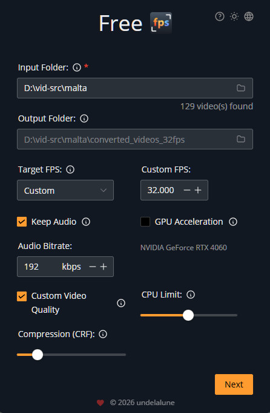
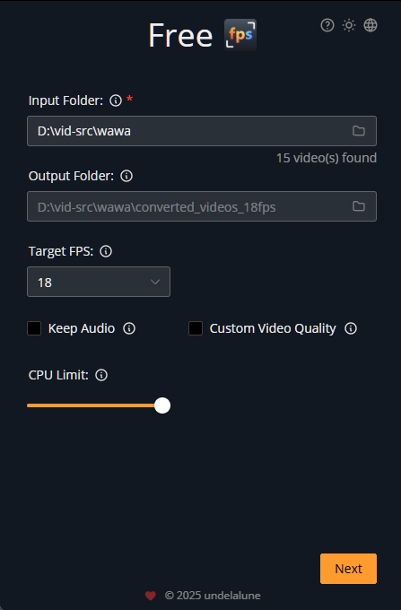
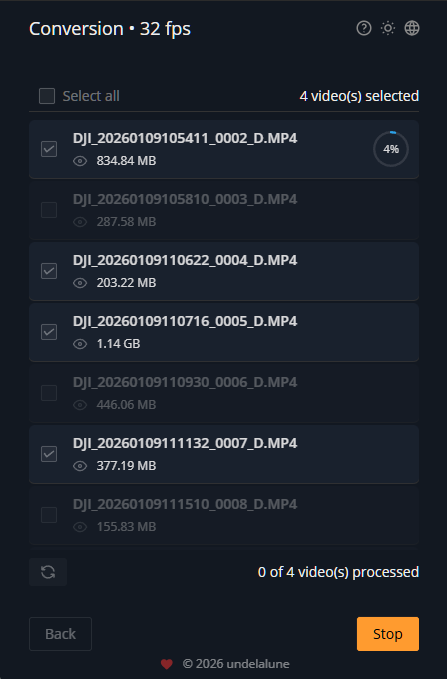
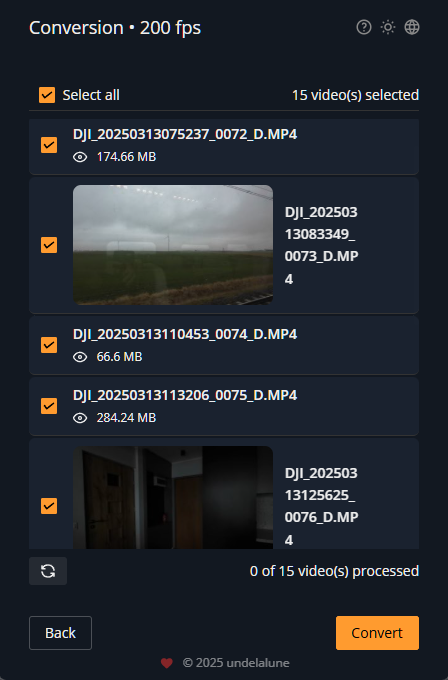
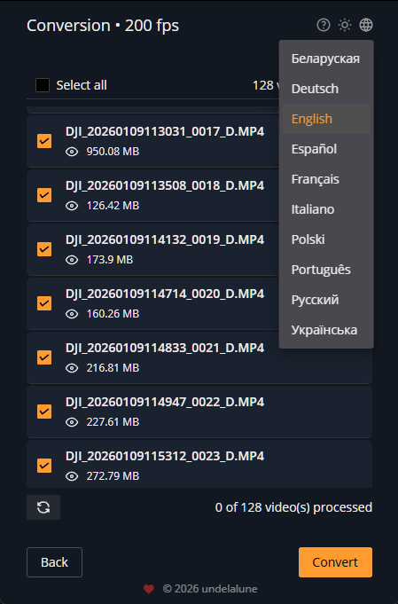
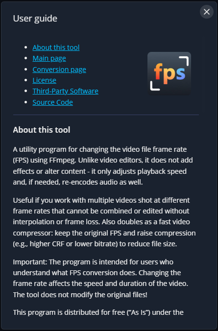

Free-FPS
Windows · macOS
Change a video's frame rate without interpolation.
01Overview
Convert video frame rates (FPS) precisely using FFmpeg: 30fps to 60fps, 24fps to 30fps, or any custom frame rate. No AI interpolation, no frame blending, no effects: just a change in how fast your video plays.
Adjust playback speed, re-encode audio and control video quality, with GPU-accelerated encoding on NVIDIA NVENC, AMD AMF, Intel QuickSync and Apple VideoToolbox. Also works as a video compressor that reduces file size without changing FPS. Your original files are never modified.

- 5×
- faster with GPU encoding
- 1–240+
- target frame rate, fps
- 10
- interface languages
- 0
- watermarks, limits or trials
02How it works
FPS conversion without interpolation
FPS (frames per second) conversion changes how fast a video plays back. Unlike AI-powered frame interpolation tools that generate new frames, Free-FPS simply adjusts the playback speed of your existing frames. No artificial frames are created, only the timing changes.
Watch: how it works
A short video on what the app can actually be used for.
Video compression without changing FPS
Keep the original FPS and use the quality controls to reduce file size:
- CRF (Constant Rate Factor): from 0 (lossless) to 51 (maximum compression)
- Automatic bitrate: the app picks settings based on resolution
- Same playback speed, just a smaller file
- Archiving: save storage while keeping acceptable quality
- Web: smaller files for faster uploads and streaming
- Batch compression of many large videos at once
File size reduction comes from compression settings (CRF/bitrate), not from changing FPS.
Common use cases
- Speed up slow-motion footage: bring 120fps or 240fps recordings to normal playback speed
- Match frame rates for editing: convert all clips to the same FPS for a smooth timeline
- Time-lapse effects: raise FPS to make a video play faster without re-recording
- Fix playback speed: correct videos recorded at the wrong frame rate
- Compress videos: keep FPS and use CRF or bitrate to shrink the file
- Platform requirements: hit the FPS a streaming platform or editor expects
03Features
Precise FPS control
Set any target FPS from 1 to 240+. Works with MP4, MKV, AVI, MOV, WebM and more.
GPU acceleration
NVIDIA NVENC, AMD AMF, Intel QuickSync and Apple VideoToolbox, up to 5x faster than CPU. Detects your GPU and falls back to CPU if needed.
Batch processing
Queue dozens of files and process them in parallel. Convert whole folders of footage at once.
Audio handling
Keep the original audio speed or adjust it to match the new frame rate. Keep quality intact or re-encode for smaller files.
Video quality control
CRF or automatic bitrate. Also works as a compressor that reduces file size without changing FPS.
CPU usage limit
Run conversions in the background while you work, or use full power for the fastest results.
10 languages
English, Deutsch, Español, Français, Italiano, Polski, Português, Русский, Українська, Беларуская.
04Screenshots











05Download
Download the free FPS converter for Windows or macOS. No registration, no trial limitations. FFmpeg is bundled.
Windows
Windows 10 1809+ and Windows 11. Requires the Microsoft Edge WebView2 runtime.
First run: Windows may warn about the app. See instructions
macOS
macOS 10.15+ (Catalina or newer). Intel and Apple Silicon.
First run: macOS may block unsigned apps. See instructions
06Guides
User guide
How to use the desktop app, in your language:
Command-line scripts
Prefer the command line? Use the PowerShell and Bash scripts directly:
07FAQ
What's the difference between FPS conversion and frame interpolation?
FPS conversion (what Free-FPS does) changes the playback speed by adjusting timing between existing frames. Frame interpolation uses AI to generate new frames between existing ones. Free-FPS doesn't create artificial frames: it simply makes your video play faster or slower, which is useful for time-lapse effects, correcting recording speeds, or matching frame rates for editing.
Can I convert 30fps to 60fps without changing speed?
No, pure FPS conversion always affects playback speed. Converting 30fps to 60fps will make your video play at 2x speed. To keep the same playback speed you would need frame interpolation software, which generates artificial frames. Free-FPS is designed for speed-based conversion: slow-motion footage, time-lapse, or matching frame rates for editing.
What video formats are supported?
All major formats FFmpeg can handle, including MP4, MKV, AVI, MOV, WebM, FLV and WMV. Input and output formats can differ: for example, you can convert an AVI file to MP4 while changing the frame rate.
Does it work with 4K and high-resolution videos?
Yes, from SD to 8K and beyond. Processing speed depends on your computer, but resolution doesn't affect the quality of FPS conversion. You can also limit CPU usage to keep the system responsive.
How does GPU acceleration work?
Free-FPS detects compatible GPUs (NVIDIA GeForce GTX 600+, AMD Radeon HD 7000+, Intel 2nd gen+, or Apple Silicon/Mac with VideoToolbox) and uses hardware encoding for up to 5x faster processing. If no compatible GPU is found, it uses CPU encoding. GPU encoding gives nearly identical quality in much less time.
Is Free-FPS really free? Are there any limitations?
Yes, Free-FPS is free and open source (GPL-3.0). There are no file size limits, no watermarks, no trial periods and no premium features. The project relies on community support and donations.
Do I need FFmpeg installed separately?
No. FFmpeg is bundled with the app on both Windows and macOS, so you can start converting right away.